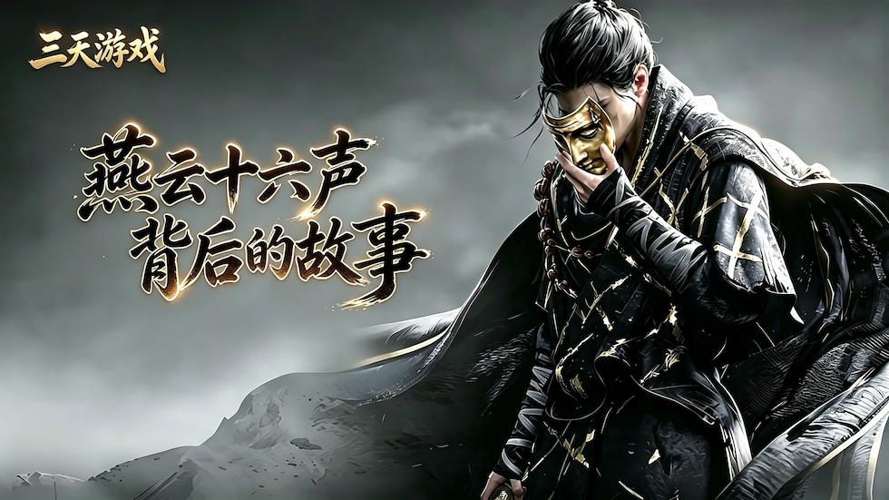
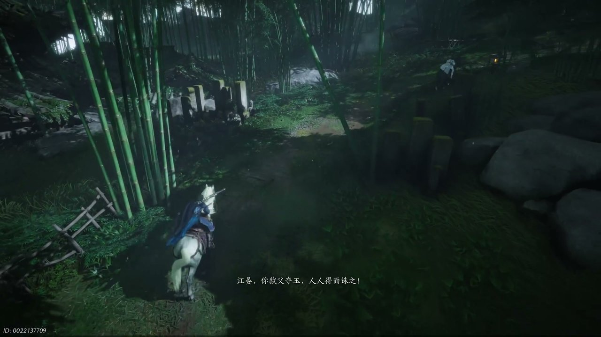
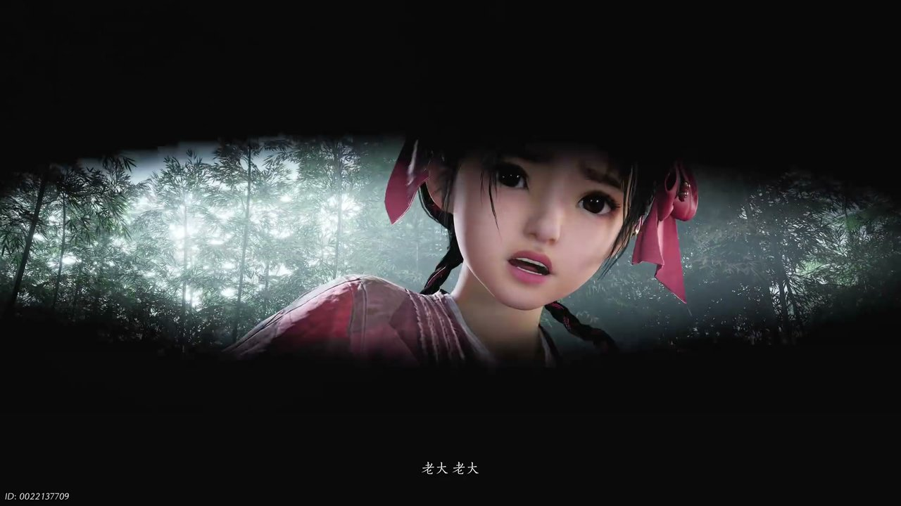
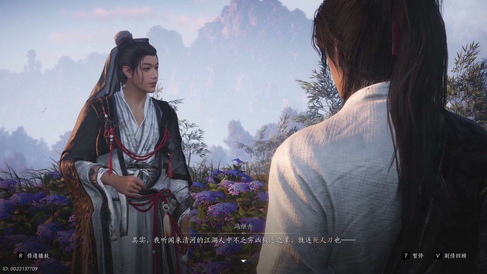
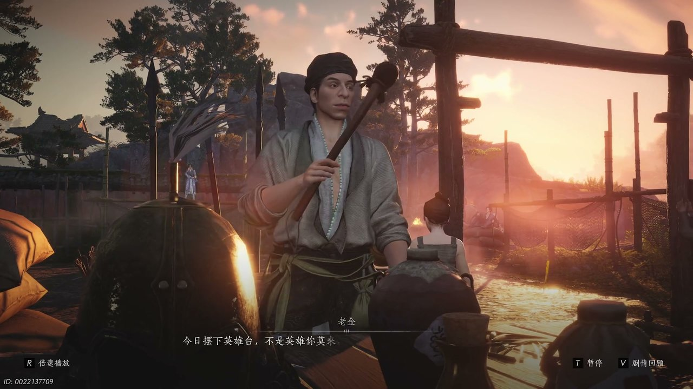
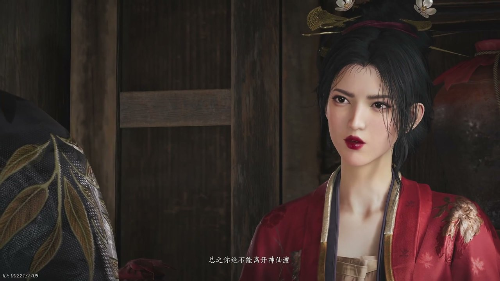

燕云背后的故事：第1集 第一集 清河

我知道好些朋友都是从短视频或者游戏广告里刷到过《燕云十六声》的，看着画面挺有感觉，但一直没搞明白这游戏到底讲了个啥故事。说实在的，这是一款五代十国末年的开放世界武侠游戏，最特别的地方在于它不讲那种爽文式的江湖，而是实打实地讲乱世里头普通人怎么活、怎么闯。今天咱们就从清河说起——那个被寒姨死死按在神仙渡的少东家，头一回真正撞上江湖，却一脚踩进了一连串的谜团里。

故事一开场就是个紧张的闪回。江晏跟陈子奚骑着马被绣金楼的人追杀到穷途末路，陈子奚劝江晏一起去江南避避风头，江晏却硬气地回了一句“不去，怕给我惹麻烦”。话音没落，绣金楼的首领就带着人追了上来，嘴里喊着“江晏你弑父夺玉，人人得而诛之”。就这一句话，把江晏这些年遭的罪全说清楚了——江湖上的人都以为他杀了自己的义父王清、抢了那块镇冠珏。陈子奚听完不但没慌，反而笑着说了句“看来这玉佩里的秘密一定有趣”，两个人策马硬闯，弓箭嗖嗖地从耳边飞过去。这段闪回虽然短，但是所有恩怨的根儿都埋在这儿了：江晏是被冤枉的，那块玉是被人盯上的，而绣金楼这伙人，从十六年前开始就没打算放过他。

画面一转，回到正片。主角在竹林旧居被红线摇醒，小姑娘急得直喊“老大老大你快醒醒啊”，原来就在刚刚主角遭到了黑衣人的袭击，并被夺走了贴身玉佩。得知此事红线急的问东问西，主角却支支吾吾的不想多说，怕她担心。两人进了小屋，主角发现门上有道龙纹标记，心里立马一紧——那是黑衣人留下的。翻箱倒柜之后，主角在暗格里找到一封信，署名“魏某白”，信里让江叔去找一个叫“田英”的人。问题是，这俩人主角听都没听江叔提起过。屋里还有一杆枪，看着像江叔的东西，连灵位都被人动过了。主角琢磨了一通：黑衣人只抢玉佩不伤人命，还故意留下标记，这事儿十有八九跟江叔的去向有关系。说实话看到这儿，我跟主角一样懵圈，玉佩、龙纹、魏某白、田英、枪、灵位——这么多线索砸过来，换谁都得上头。

离开竹林往将军祠去的路上，主角跟红线碰上了文经馆的弟子冯继生。这哥们儿练箭差点一箭双雕射中俩人，赶紧赔礼道歉，说自己“文经馆弟子冯继生奉命来清河办事”。红线一听文经馆的名头，眼睛都亮了，以为碰上了江湖大侠，冯继生却特实在地说自己武功微末，当不起侠客这个名号。为了表示歉意，他把自己研究多年的射术心得送给了主角，还跟主角比试了一场。主角赢了之后，冯继生把看家本事“停渊止水”都传了过去——这招能在拉弓的时候让时间暂时停住，听着就厉害。临走前冯继生撂下一句话：“来清河的江湖人中不乏穷凶极恶之辈，就连死人刀也南下了。”主角一听，心里咯噔一下，自己遇到的黑衣人，会不会跟这个死人刀有关系？冯继生这人给我的感觉特别实在，文经馆出来的弟子，讲究的是知错就改、以礼待人，跟后来那些江湖上的凶狠角色完全两种路子。

到了将军祠，红线已经替主角报名了擂台，摆擂的是个叫老金的商人，嘴皮子贼溜，喊什么“今日摆下英雄台，不是英雄你莫来”。擂台上守擂的是天泉门下的高徒方旭，外号“神刀猛”，一身硬气功确实霸道。主角上去跟方旭打了一架，还真把人给赢了。可到了领彩头的时候，主角一瞅老金拿出来的东西——开封买房减十文的废票、土鸡蛋冒充的宝贝——当场就火了：“出个破烂当彩头趁机倒卖，还骗小孩！”老金被揭穿了灰溜溜想跑，被主角拽上擂台一通收拾，最后丢下彩头和一套装备就溜了。方旭知道自己被当枪使了，也挺不好意思，把彩头交给主角还传了招“听风辨位”。之后主角私下跟广胡子打听江叔的消息，广胡子叹着气说，这三年来他一直在打听，可江大侠就像人间蒸发了一样，谁都不知道他去哪儿了，江叔留下的那本书也没人能看懂里面的字。广胡子最后劝了一句：“江湖离咱们还是太远了。”这话听着扎心，但从一个常年跑商的人嘴里说出来，分量特别重——他们见过太多被江湖吞掉的人了。

回到不羡仙酒馆，主角把事情一五一十跟寒姨说了。寒姨一听黑衣人抢了玉佩，第一句话问的是“你有受伤吗”，可紧接着就变了脸，斩钉截铁地说“总之你绝不能离开神仙渡”。主角不服气，扯着嗓子问为什么不让他去江湖、为什么不去找江叔，寒姨直接吼回来：“江湖江湖一天到晚就知道江湖念叨十几年了，你是想烦死我啊！”这一架吵得，说实话看着挺憋屈，但你能感觉到寒姨那股子劲儿不是坏，她是怕。酒馆里各路商贩和江湖客还在那儿聊得起劲，走南路的赵春说未央城多富多豪，温公子把金杯往水里扔任人捡；走北路的刘三爷讲烟云被契丹占了之后惨成什么样，燕北盟的人还在死撑；说书的老头儿接着讲死人刀跟十二煞的恩怨——这把刀是天池玄铁打的，是十二煞老大送的，后来死人刀跟十二煞翻脸，一柄大刀连杀了十一个人。旁边一个狂妄的江湖客拍桌子说，听说死人刀来清河了，他要去会会。酒馆里热闹得不行，可这热闹底下藏着的，全是刀子。
第一集《清河》从头到尾就是用两条线在拉扯：一边是主角对江湖的向往，断桥上蹦蹦跳跳的红线、擂台上打赢对手的快意、听人说书时的满眼放光；另一边是江湖露出来的真面目，黑衣人、死人刀、绣金楼，还有寒姨脸上藏都藏不住的紧张。竹林旧居的龙纹标记、暗格里那封署名“魏某白”的信、田英这个名字、江叔三年前的音信全无，这些扣子都在第一集系上了，后面的故事就得一个一个解。说实话，我是真想知道那玉佩里头到底藏着什么秘密，死人刀南下清河到底要干什么。清河篇的后续会越来越凶险，红线后来的命运、不羡仙的那场劫难，都是后话了。喜欢这类剧情解读的朋友点个关注，下一集咱们接着聊——你们觉得抢走玉佩的黑衣人，跟那个传闻中的死人刀，会不会是同一个人？评论区说说你的猜测。
关于我们
📱 公众号名称：三天游戏
✍️ 作者：曾三天
扫码关注公众号，获取每日最新资讯

商务合作与版权
商务合作 / 内容投稿 / 品牌推广
请关注公众号「三天游戏」后台留言联系
版权声明：本文由作者整理，转载需注明出处。